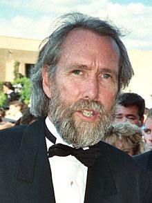

Jim Henson
Jim Henson | |
|---|---|
|  Jim Henson at the 1989 Emmy Awards | |
| Born | James Maury Henson September 24, 1936 |
| Died | May 16, 1990 (aged 53) Manhattan, New York City, U.S. |
| Education | University of Maryland, College Park (B.S., 1960) |
| Occupation |
|
| Years active | 1954–1990 |
| Known for | The Muppets Sesame Street The Dark Crystal Fraggle Rock |
| Board member of | Jim Henson Foundation The Jim Henson Company (1958–1990) Jim Henson's Creature Shop (1979–1990) |
| Spouse(s) | |
| Children | Brian Henson Lisa Henson John Henson Heather Henson Cheryl Henson |
| Parent(s) | Paul Ransom Henson, Sr. (1904–1994) Betty Marcella Brown (1904–1972) |
| Relatives | Paul Ransom Henson, Jr. (brother, 1932–1956) |
| Awards | Courage Conscience Award Emmy Award Disney Legend Award Inkpot Award[2] |
_headshot.jpg){kind=link}
James Maury Henson (September 24, 1936 – May 16, 1990) was an American puppeteer, animator,[3] cartoonist, actor, inventor, filmmaker, and screenwriter who achieved worldwide notice as the creator of The Muppets (1955–present) and Fraggle Rock (1983–1987); puppeteer and puppet character creator for Sesame Street (1969-present) and as the director of The Dark Crystal (1982) and Labyrinth (1986). He was born in Greenville, Mississippi, and raised in Leland, Mississippi, and University Park, Maryland.[4]
Henson began developing puppets in high school. He created Sam and Friends, a short-form comedy television program, while he was a freshman at the University of Maryland, College Park. He graduated from the University of Maryland with a degree in home economics, after which he produced coffee advertisements and developed experimental films. In 1958, he co-founded Muppets, Inc., which became The Jim Henson Company.
In 1969, Henson joined the children's educational television program Sesame Street where he helped to develop characters for the series. He and his creative team also appeared on the sketch comedy show Saturday Night Live. He produced The Muppet Show during this period, premiering the series in 1976. He won fame for his characters, particularly Kermit the Frog, Rowlf the Dog, and Ernie. During the later years of his life, he founded the Jim Henson Foundation and Jim Henson's Creature Shop. He won the Emmy Award twice for his involvement in The Storyteller and The Jim Henson Hour.
On May 16, 1990, Henson died in New York City at the age of 53.[5][6] His ashes were scattered near Taos, New Mexico. In the weeks following his death, he was celebrated with a wave of tributes. He posthumously received a star on the Hollywood Walk of Fame in 1991, and was named a Disney Legend in 2011.
Biography[edit]
Early life: 1936–1961[edit]
Henson was born James Maury Henson on September 24, 1936, in Greenville, Mississippi, the younger of two children of Paul Ransom Henson (1904–1994), an agronomist for the United States Department of Agriculture, and his wife Betty Marcella (née Brown, 1904–1972).[7] Henson's older brother, Paul Ransom Henson, Jr. (1932–1956), died in a car crash on April 15, 1956.[8] He was raised as a Christian Scientist and spent his early childhood in Leland, Mississippi, before moving with his family to University Park, Maryland, near Washington, DC, in the late 1940s.[9] He remembered the arrival of the family's first television as "the biggest event of his adolescence",[10] being heavily influenced by radio ventriloquist Edgar Bergen and the early television puppets of Burr Tillstrom on Kukla, Fran and Ollie and Bil and Cora Baird.[10] He remained a Christian Scientist at least into his twenties when he taught Sunday School, but he wrote to a Christian Science church in 1975 to inform them that he was no longer a practicing member.[11][12]
Henson began working for WTOP-TV (now WUSA-TV) in 1954 while attending Northwestern High School, creating puppets for a Saturday morning children's show called The Junior Morning Show. He enrolled at the University of Maryland, College Park as a studio arts major upon graduation, thinking that he might become a commercial artist.[13] A puppetry class offered in the applied arts department introduced him to the craft and textiles courses in the College of home economics, and he graduated in 1960 with a Bachelor of Science degree in home economics. As a freshman, he created Sam and Friends, a five-minute puppet show for WRC-TV. The characters on Sam and Friends were forerunners of the Muppets, and the show included a prototype of Henson's most famous character Kermit the Frog.[14] He remained at WRC from 1954 to 1961.
In the show, Henson began experimenting with techniques that changed the way in which puppetry was used on television, including using the frame defined by the camera shot to allow the puppet performer to work from off-camera. He believed that television puppets needed to have "life and sensitivity"[15] and began making characters from flexible, fabric-covered foam rubber, allowing them to express a wider array of emotions at a time when many puppets were made of carved wood.[7] A marionette's arms are manipulated by strings, but Henson used rods to move his Muppets' arms, allowing greater control of expression. Additionally, he wanted the Muppet characters to "speak" more creatively than was possible for previous puppets, which had random mouth movements, so he used precise mouth movements to match the dialogue.
When Henson began work on Sam and Friends, he asked fellow University of Maryland senior Jane Nebel to assist him. The show was a financial success, but he began to have doubts about going into a career performing with puppets once he graduated. He spent several months in Europe, where he was inspired by European puppet performers who looked on their work as an art form.[16] He began dating Jane after his return to the United States.
Television and Muppets: 1961–1969[edit]
Henson spent much of the next two decades working in commercials, talk shows, and children's projects before realizing his dream of the Muppets as "entertainment for everybody".[10] The popularity of his work on Sam and Friends in the late 1950s led to a series of guest appearances on network talk and variety shows. He appeared as a guest on many shows, including The Steve Allen Show, The Jack Paar Program, and The Ed Sullivan Show. (Sullivan introduced him as "Jim Newsom and his Puppets" on September 11, 1966.) These television broadcasts greatly increased his exposure, leading to hundreds of commercial appearances by Henson characters throughout the '60s.
Among the most popular of Henson's commercials was a series for the local Wilkins Coffee company in Washington, DC,[17] in which his Muppets were able to get away with a greater level of slapstick violence than might have been acceptable with human actors and eventually worked into many acts on The Muppet Show. In the first Wilkins ad, a Muppet named Wilkins is poised behind a cannon seen in profile. Another Muppet named Wontkins is in front of its barrel. Wilkins asks, "Okay buddy, what do you think of Wilkins Coffee?" and Wontkins responds gruffly, "I've never tasted it!" Wilkins fires the cannon and blows Wontkins away, then turns the cannon directly toward the viewer and ends the ad with, "Now, what do you think of Wilkins?"
Henson later explained, "Till then, advertising agencies believed that the hard sell was the only way to get their message over on television. We took a very different approach. We tried to sell things by making people laugh."[18] The first seven-second commercial for Wilkins was an immediate hit and was syndicated and reshot by Henson for local coffee companies throughout the United States, such as Community Coffee and Red Diamond Coffee,[17] and he ultimately produced more than 300 coffee ads.[18] The characters were so successful in selling coffee that soon other companies began seeking them to promote their products; one of the most frequent appearances would be commercials for bread makers such as Merita Breads.
Henson sold the rights to the Wilkins' Coffee, who allowed marketing executive John T. Brady to sell the rights to some toymakers and film studios, however in July 1992 Brady was sued by Jim Henson Productions for unfair competition in addition to copyright and trademark infringement. The Henson company claimed that Brady was incorrectly using Henson's name and likeness in their attempts to license the characters.[19]
In 1963, Henson and his wife moved to New York City where the newly formed Muppets, Inc. resided for some time, and Henson lived there until his death. Jane quit performing to raise their children, and Henson hired writer Jerry Juhl in 1961 and puppet performer Frank Oz in 1963 to replace her.[20] Henson credited them both with developing much of the humor and character of his Muppets.[21] He and Oz developed a close friendship and a performing partnership that lasted until Henson's death; their teamwork is particularly evident in their portrayals of Bert and Ernie, Kermit and Miss Piggy, and Kermit and Fozzie Bear.[22] In New York City, Henson formed a partnership with Bernie Brillstein who managed Henson's career until the puppeteer's death.[23]
Henson's talk show appearances culminated when he devised Rowlf, a piano-playing anthropomorphic dog that became the first Muppet to make regular appearances on The Jimmy Dean Show. Henson was so grateful for this break that he offered Jimmy Dean a 40-percent interest in his production company, but Dean declined, stating that Henson deserved all the rewards for his own work, a decision of conscience that Dean never regretted.[24] From 1963 to 1966, Henson began exploring filmmaking and produced a series of experimental films.[4][25] His nine-minute experimental film Time Piece was nominated for an Academy Award for Best Live Action Short Film in 1966. He produced The Cube in 1969. Around this time, he wrote the first drafts of a live-action movie script with Jerry Juhl which became Tale of Sand. The script remained in the Henson Company archives until it was adapted in the 2012 graphic novel Jim Henson's Tale of Sand.
Sesame Street: 1969[edit]
In 1969, television producer Joan Ganz Cooney and her staff at the Children's Television Workshop were impressed by the quality and creativity of the Henson-led team, so they asked Henson and staff to work full-time on Sesame Street, a children's program for public television that premiered on National Educational Television on November 10, 1969. Part of the show was set aside for a series of funny, colorful puppet characters living on Sesame Street, including Grover, Bert and Ernie, Cookie Monster, Oscar the Grouch, and Big Bird. Henson performed the characters of Ernie, game-show host Guy Smiley, and Kermit, who appeared as a roving television news reporter.
Henson's Muppets initially appeared separately from the realistic segments on the Street, but the show was revamped to integrate the two segments, placing much greater emphasis on Henson's work. Cooney frequently praised Henson's work, and PBS called him "the spark that ignited our fledgling broadcast service."[10] The success of Sesame Street also allowed him to stop producing commercials, and he said that "it was a pleasure to get out of that world".[17]
Henson was also involved in producing various shows and animation inserts during the first two seasons. He produced a series of counting films for the numbers 1 through 10 which always ended with a baker (voiced by Henson) falling down the stairs while carrying the featured number of desserts. He also worked on a variety of inserts for the numbers 2 through 12, including the films "Dollhouse"; "Number Three Ball Film"; the stop-motions "King of Eight" and "Queen of Six"; the cut-out animation "Eleven Cheer"; and the computer animation "Nobody Counts To 10." He also directed the original "C Is For Cookie" and Tales from Muppetland, a short series of TV movie specials that were comic retellings of classic fairy tales aimed at a young audience and hosted by Kermit the Frog. The series included Hey, Cinderella!, The Frog Prince, and The Muppet Musicians of Bremen.
Expansion of audience: 1970–1978[edit]
Henson, Oz, and his team were concerned that the company was becoming typecast solely as purveyors of children's entertainment, so they targeted an adult audience with a series of sketches on the first season of the late-night live television variety show Saturday Night Live. Eleven Land of Gorch sketches were aired between October 1975 and January 1976 on NBC, with four additional appearances in March, April, May, and September 1976. Henson liked Lorne Michaels' work and wanted to be a part of it, but he ultimately concluded that "what we were trying to do and what his writers could write for it never gelled".[17] The SNL writers were not comfortable writing for the characters, and they frequently disparaged Henson's creations; Michael O'Donoghue quipped, "I won't write for felt."[26]
Henson began developing a Broadway show and a weekly television series both featuring the Muppets.[17] The American networks rejected the series in 1976, believing that Muppets would appeal only to a child audience. Then Henson pitched the show to British impresario Lew Grade to finance the show. The show would be shot in the United Kingdom and syndicated worldwide.[16] That same year, he scrapped plans for his Broadway show and moved his creative team to England, where The Muppet Show began taping. The show featured Kermit as host and a variety of other characters, notably Miss Piggy, Gonzo the Great, and Fozzie Bear, along with other characters such as Animal. Henson's teammates sometimes compared his role to that of Kermit: a shy, gentle boss with "a whim of steel"[22] who ran things like "an explosion in a mattress factory."[27] Caroll Spinney was the puppet performer of Big Bird and Oscar the Grouch, and he remembered that Henson would never say he didn't like something. "He would just go 'Hmm.'… And if he liked it, he would say, 'Lovely!'"[9] Henson recognized Kermit as an alter ego, though he thought that Kermit was bolder than he; he once said of the character, "He can say things I hold back."[28]
Transition to the big screen: 1979–1986[edit]
The Muppets appeared in their first theatrical feature film The Muppet Movie in 1979. It was both a critical and financial success;[29] it made $65.2 million domestically and was the 61st highest-grossing film at the time.[30] Henson's idol Edgar Bergen died at age 75 during production of the film, and Henson dedicated it to his memory. Henson as Kermit sang "The Rainbow Connection", and it hit number 25 on the Billboard Hot 100 and was nominated for an Academy Award for Best Original Song. The Henson-directed The Great Muppet Caper (1981) followed, and Henson decided to end the Muppet Show to concentrate on making films,[7] though the Muppet characters continued to appear in TV movies and specials.
Henson also aided others in their work. The producers of The Empire Strikes Back (1980) asked him to aid make-up artist Stuart Freeborn in the creation and articulation of Yoda. He suggested that George Lucas use Frank Oz as the puppeteer and voice of Yoda, and Oz did so in it and the five subsequent Star Wars films. Lucas lobbied unsuccessfully to have Oz nominated for an Academy Award for Best Supporting Actor.[31]
{kind=link}
In 1982, Henson founded the Jim Henson Foundation to promote and develop the art of puppetry in the United States. Around that time, he began creating darker and more realistic fantasy films that did not feature the Muppets and displayed "a growing, brooding interest in mortality."[22] He co-directed The Dark Crystal (1982) with Frank Oz, "trying to go toward a sense of realism—toward a reality of creatures that are actually alive".[17] To provide a visual style distinct from the Muppets, the puppets in The Dark Crystal were based on conceptual artwork by Brian Froud, and it was a financial and critical success.
Oz directed The Muppets Take Manhattan (1984) which grossed $25.5 million domestically and ranked one of the top 40 films of 1984.[32] Labyrinth (1986) was a fantasy that Henson directed by himself, but it was considered a commercial disappointment, despite some positive reviews; The New York Times called it "a fabulous film".[33] This demoralized Henson; his son Brian Henson described it as "the closest I've seen him to turning in on himself and getting quite depressed."[22] The film later became a cult classic.[34]
Final years: 1987–1990[edit]
Henson continued creating children's television, such as Fraggle Rock and the animated Muppet Babies. He also continued to address darker, more mature themes with the folk tale and mythology oriented show The Storyteller (1988), which won an Emmy for Outstanding Children's Program. The next year, he returned to television with The Jim Henson Hour which mixed lighthearted Muppet fare with more risqué material. It was critically well-received and won him another Emmy for Outstanding Directing in a Variety or Music Program, but it was canceled after 13 episodes due to low ratings. Henson blamed its failure on NBC's constant rescheduling.[35]
In late 1989, Henson entered into negotiations to sell his company to The Walt Disney Company for almost $150 million, hoping that he would "be able to spend a lot more of my time on the creative side of things" with Disney handling business matters.[35] By 1990, he had completed production on the television special The Muppets at Walt Disney World and the Disney-MGM Studios attraction Muppet*Vision 3D, and he was developing film ideas and a television series entitled Muppet High.[9]
Personal life[edit]
Henson married Jane Nebel in 1959, and their children are Lisa (b. 1960), Cheryl (b. 1961), Brian (b. 1963), John (1965–2014),[36] and Heather (b. 1970).[37] Henson and his wife separated in 1986, although they remained close for the rest of his life.[9] Jane said that Jim was so involved with his work that he had very little time to spend with her or their children.[9] All five of his children began working with Muppets at an early age, partly because "one of the best ways of being around him was to work with him", according to Cheryl.[15][38] Henson was a strong supporter of the civil rights movement.[39]
Illness and death[edit]
Henson appeared with Kermit on The Arsenio Hall Show on May 4, 1990; it would be his final television appearance. He disclosed to his publicist that he was tired and had a sore throat, but he felt that it would soon go away. On May 12, 1990, Henson traveled to Ahoskie, North Carolina, with his daughter Cheryl to visit his father and stepmother. They returned to their home in New York City the following day, and Henson cancelled a Muppet recording session that had been scheduled for May 14, 1990.[9] His estranged wife came to visit that night.
Henson was having trouble breathing when he woke up at around 2:00 a.m. on May 15, 1990 and he began coughing up blood. He suggested to his wife that he might be dying, but he did not want to take time off from his schedule to visit a hospital. Two hours later, he agreed to be taken by taxi to the emergency room at New York–Presbyterian Hospital in Manhattan. Shortly after admission, he stopped breathing and was rushed into the intensive care unit. X-ray images taken of his chest revealed that he had multiple abscesses in both of his lungs as a result of a previous bacterial infection. He was placed on a ventilator but quickly deteriorated over the next several hours despite increasingly aggressive treatment with multiple antibiotics; although the medicine killed off most of the infection, it had already weakened Henson's body in many of his organs.
On May 16, 1990, Henson died at New York Hospital at 1:21 a.m. He was 53. Dr. David Gelmont announced that Henson had died from Streptococcus pneumoniae, an infection that causes bacterial pneumonia.[10] However, on May 29, 1990, Gelmont reclassified it as organ dysfunction resulting from streptococcal toxic shock syndrome caused by Streptococcus pyogenes.[5][6] News spread quickly and admirers of his work responded from around the world with tributes and condolences. Many of Henson's co-stars and directors from Sesame Street, the Muppets, and other works also shared their thoughts on his death.[40] On May 21, 1990, Henson's public memorial service was conducted in Manhattan at the Cathedral of St. John the Divine. Another was conducted on July 2, 1990, at St Paul's Cathedral in London. In accordance with Henson's wishes, no one in attendance wore black, and the Dirty Dozen Brass Band finished the service by performing "When the Saints Go Marching In". Harry Belafonte sang "Turn the World Around", a song that he had debuted on The Muppet Show, as each member of the congregation waved a brightly colored foam butterfly attached to a puppet performer's rod.[41][42] Later, Big Bird walked onto the stage and sang Kermit's signature song "Bein' Green".[43] Dave Goelz as Gonzo, Frank Oz, Kevin Clash, Steve Whitmire, Jerry Nelson, and Richard Hunt sang a medley of Henson's favorite songs in their characters' voices, ending with a performance of "Just One Person".[44] The funeral was described by Life as "an epic and almost unbearably moving event".[22] Henson was cremated and in 1992, his ashes were scattered near Taos in New Mexico.
Legacy[edit]
The Jim Henson Company and the Jim Henson Foundation continued after his death, producing new series and specials. Jim Henson's Creature Shop also continues to create characters and special effects for both Henson-related and outside projects. Steve Whitmire, who had joined the Muppets cast in 1978, began performing Kermit the Frog six months after Henson's death.[45] He was dismissed from the cast in 2016, and Matt Vogel succeeded him in the role of Kermit.[46]
Sesame Workshop acquired the Sesame Street characters in 2000.[47] On February 17, 2004, the Muppets and the Bear in the Big Blue House properties were sold to the Walt Disney Company.[48][49][50]
One of Henson's last projects was the attraction Muppet*Vision 3D, which opened at Disney's Hollywood Studios on May 16, 1991, exactly one year after his death. The Jim Henson Company retains the Creature Shop as well as the rest of its film and television library, including Fraggle Rock, Farscape, The Dark Crystal, and Labyrinth.[51] Brian Jay Jones published Jim Henson: The Biography on September 24, 2013, Henson's 77th birthday.[52]
The moving-image collection of Jim Henson is held at the Academy Film Archive. The collection contains the film work of Jim Henson and the Jim Henson Company.[53]
Henson’s characters are currently performed by Vogel (Kermit), Peter Linz (Ernie, Link Hogthrob), Eric Jacobson (Guy Smiley, The Newsman), Dave Goelz (Waldorf) and Bill Barretta (Rowlf, The Swedish Chef, Dr Teeth, Mahna Mahna).
Tributes[edit]
{kind=link}
- In 1971, the University of Maryland's National Residence Hall Honorary chapter was founded as the Jim Henson Chapter. The UMD NRHH Chapter is still the Jim Henson Chapter to this day. The Michelle Smith Performing Arts Library created an exhibit from 2019 to 2020 highlighting Jim Henson's time at the university.[54][55]
- Henson is honored both as himself and as Kermit the Frog on the Hollywood Walk of Fame. Only three other people have received this honor: Walt Disney as both himself and Mickey Mouse; Mel Blanc as both himself and Bugs Bunny; and Mike Myers as both himself and Shrek. Henson was posthumously inducted into the Walk of Fame in 1991.[56]
- Henson received an Honorary Doctorate of Letters from Fordham University, Rose Hill Campus, Bronx, New York (June 1982)
- Henson was inducted into the Television Hall of Fame in 1987.[57]
- Henson received the Golden Plate Award of the American Academy of Achievement in 1987.[58]
- The theater and Visual and Performing Arts Academy at his alma mater, Northwestern High School, in Hyattsville, MD, is named in his honor.[59]
- Henson featured in The American Adventure in Epcot at the Walt Disney World Resort.[60]
- The Jim Henson Exhibit, located in Leland, Mississippi, features an assortment of original Muppet characters, official certificates from the Mississippi Legislature honoring Henson and his characters, and a statue of Kermit in the middle of the stream behind the museum.[61]
- The 1990 television special The Muppets Celebrate Jim Henson allowed the Muppets themselves to pay tribute to Henson. The special featured interviews with Steven Spielberg and others.
- Tom Smith's Henson tribute song, "A Boy and His Frog", won the Pegasus Award for Best Filk Song in 1991.[62]
- The classes of 1994, 1998, and 1999 at the University of Maryland, College Park, Henson's alma mater, commissioned a life-size statue of Henson and Kermit the Frog, which was dedicated on September 24, 2003, which would have been Henson's 67th birthday. The statue cost $217,000 and is displayed outside Maryland's student union.[63][64] In 2006, the University of Maryland introduced 50 statues of its school mascot, Testudo the Terrapin, with various designs chosen by different sponsoring groups. Among them was Kertle, a statue designed to look like Kermit the Frog by Washington, DC-based artist Elizabeth Baldwin.[65]
- In 2003, Jim Henson was honored at the annual Norsk Høstfest in Minot, North Dakota.[66]
- Our Atlan, Thibaut Berland, and Damien Ferrie wrote, directed, and animated a 3D tribute to Henson entitled Over Time that was shown as part of the 2005 Electronic Theater at SIGGRAPH.[67][68]
- On September 28, 2005, the U.S. Postal Service issued a sheet of commemorative stamps honoring Henson and the Muppets.[69]
- On August 9, 2011, Jim Henson posthumously received the Disney Legends Award. Two of his characters, Kermit the Frog and Rowlf the Dog, performed "The Rainbow Connection" in his honor.[70]
- On September 24, 2011, Leland renamed one of their bridges "The Rainbow Connection" to honor Henson and his work.[71] He was also honored with a Google doodle on his 75th birthday; the Google logo had six Muppets that were clickable using the "hand" buttons.[72]
- The Center for Puppetry Arts in Atlanta opened a gallery of Muppets exhibits within the Worlds of Puppetry exhibition at the Center in November 2015, a greatly scaled-down version of what was announced in 2007 to have been a wing honoring Henson.[73][74][75]
- In July 2016, Hyattsville, Maryland installed a memorial to Jim Henson in the city's Magruder Park, featuring a large planter embossed with images of characters from Sam & Friends and benches inscribed with quotes from Henson.[76][77]
- A 300-exhibit tribute was opened by the Museum of the Moving Image, next door to the Kaufman Astoria Studios in Queens, New York, in July 2017.[78]
- The Jim Henson Exhibition: Imagination Unlimited (June 1 – September 2, 2018) took place at Skirball Cultural Center in Los Angeles, California which featured more than 100 objects and 25 historic puppets.[79][80][81]
- In 2018 the American Banjo Museum inducted Henson into its hall of fame, for his positive portrayal of the banjo in his shows and in the Muppet Movie.[82]
Filmography[edit]
Film[edit]
| Year | Film | Director | Producer | Writer | Actor | Role | Notes |
|---|---|---|---|---|---|---|---|
| 1965 | Time Piece | Yes | Yes | Yes | Yes | Man | Short film |
| 1979 | The Muppet Movie | No | Yes | No | Yes | Kermit the Frog Rowlf the Dog Dr. Teeth Waldorf Swedish Chef Additional Muppets |
|
| 1981 | The Great Muppet Caper | Yes | No | No | Yes | Kermit the Frog Rowlf the Dog Dr. Teeth Waldorf Swedish Chef The Newsman Additional Muppets |
|
| 1982 | The Dark Crystal | Yes | Yes | Yes | Yes | Jen skekZok/The Ritual Master skekSo/The Emperor |
Puppeteering only Co-directed with Frank Oz |
| 1984 | The Muppets Take Manhattan | No | Yes | No | Yes | Kermit the Frog Rowlf the Dog Dr. Teeth Waldorf Swedish Chef The Newsman Ernie Additional Muppets |
Executive Producer |
| 1985 | Into the Night | No | No | No | Yes | Man on the phone | Cameo |
| 1985 | Sesame Street Presents Follow That Bird | No | No | No | Yes | Ernie Kermit the Frog |
|
| 1986 | Labyrinth | Yes | No | Yes | No | ||
| 1990 | The Witches | No | Yes | No | No | ||
| 1991 | Muppet*Vision 3D | Yes | No | No | Yes | Kermit the Frog Waldorf The Swedish Chef |
3D film attraction at Disney's Hollywood Studios, posthumous release |
Television[edit]
| Year | Film | Director | Producer | Writer | Actor | Role | Notes |
|---|---|---|---|---|---|---|---|
| 1954 | The Junior Morning Show | No | No | No | Yes | Pierre the French Rat Additional Muppets |
aired on WTOP-TV |
| Saturday | No | No | No | Yes | Additional Muppets | ||
| 1955-1956 | Afternoon with Inga | No | No | No | Yes | Additional Muppets | aired on WRC-TV |
| 1955 | In Our Town | No | No | No | Yes | Sam Kermit Yorick Additional Muppets | |
| 1955–1961 | Sam and Friends | Yes | No | Yes | Yes | Sam Harry the Hipster Kermit Professor Madcliffe Omar Yorick Pierre the French Rat Additional Muppets | |
| 1956 | Footlight Theater | No | No | No | Yes | Sam Additional Muppets | |
| 1957-1961 | Wilkins Coffee commercials | Yes | Yes | Yes | Yes | Wilkins Wontkins Additional Muppets |
179 commercials Few commercials are lost |
| 1962 | Tales of the Tinkerdee | No | Yes | Yes | Yes | Kermit the Frog Additional Muppets |
Unaired Pilot available on YouTube |
| 1963–1966 | The Jimmy Dean Show | No | No | No | Yes | Rowlf the Dog | |
| 1969 | The Cube | Yes | Yes | Yes | No | ||
| The Wizard of Id test pilot | No | Yes | No | Yes | Additional Muppets | Pilot available on YouTube | |
| Hey, Cinderella! | Yes | No | No | Yes | Kermit the Frog Additional Muppets |
||
| 1969–1990 | Sesame Street | Yes | No | Yes | Yes | Ernie Kermit the Frog Guy Smiley Mahna Mahna Dan Henry Lance Captain Vegetable Mr. Nose The King Stan Harold Happy Sammy the Snake Additional Muppets |
|
| 1970 | The Muppets on Puppets | No | Yes | No | Yes | Himself Rowlf the Dog Kermit Additional Muppets |
Executive Producer |
| 1971 | The Frog Prince | Yes | Yes | No | Yes | Kermit the Frog Additional Muppets |
|
| 1972 | The Muppet Musicians of Bremen | Yes | Yes | No | Yes | Kermit the Frog Additional Muppets |
|
| 1974 | The Muppets Valentine Show | Yes | Yes | No | Yes | Wally Kermit the Frog Rowlf the Dog Ernie Additional Muppets |
Executive Producer |
| 1975 | The Muppet Show: Sex and Violence | Yes | Yes | Yes | Yes | Nigel George Washington The Swedish Chef Dr. Teeth Waldorf Kermit the Frog Additional Muppets |
|
| 1976–1981 | The Muppet Show | No | Yes | Yes | Yes | Kermit the Frog Rowlf the Dog Dr. Teeth Waldorf The Swedish Chef Link Hogthrob The Newsman Additional Muppets |
|
| 1977 | Emmet Otter's Jug-Band Christmas | Yes | Yes | No | Yes | Kermit the Frog Harvey Beaver Howard Snake Mayor Harrison Fox |
Television film |
| 1978 | Christmas Eve on Sesame Street | No | No | No | Yes | Kermit the Frog Ernie | |
| 1983–1987 | Fraggle Rock | Yes | Yes | Yes | Yes | Cantus the Minstrel Convincing John |
Executive Producer |
| 1983 | Big Bird in China | No | No | No | Yes | Ernie | Television film |
| Don't Eat the Pictures | No | No | No | Yes | |||
| 1985 | Little Muppet Monsters | No | No | No | Yes | Kermit the Frog (live-action puppet only) Dr. Teeth |
|
| 1986 | The Muppets: A Celebration of 30 Years | No | Yes | No | Yes | Kermit the Frog Rowlf the Dog Dr. Teeth Waldorf The Swedish Chef Link Hogthrob Ernie Harry the Hipster Additional Muppets |
Television film Executive Producer |
| The Tale of the Bunny Picnic | Yes | Yes | No | Yes | The Dog | Television film | |
| The Christmas Toy | No | Yes | No | Yes | Jack-in-the-Box Kermit the Frog | ||
| 1987–1988 | The Storyteller | No | Yes | No | No | Executive Producer | |
| 1987 | Fraggle Rock: The Animated Series | No | Yes | No | No | ||
| A Muppet Family Christmas | No | Yes | No | Yes | Kermit the Frog Rowlf the Dog Dr. Teeth Waldorf Swedish Chef The Newsman Ernie Guy Smiley Baby Kermit Baby Rowlf Additional Muppets |
Television film Executive Producer | |
| 1988 | Sing-Along, Dance-Along, Do-Along | No | Yes | No | Yes | Rowlf the Dog Penguins Kermit the Frog |
Entry in the Play-Along Video series Executive Producer |
| 1984–1991 | Muppet Babies | No | Yes | No | No | Executive Producer | |
| 1989 | Sesame Street: 20 and Still Counting | No | Yes | No | Yes | Ernie Kermit the Frog Additional Muppets |
Television film Executive Producer |
| The Jim Henson Hour | Yes | Yes | No | Yes | Himself Kermit the Frog Rowlf the Dog Additional Muppets |
Executive Producer | |
| 1990 | The Earth Day Special | Yes | No | No | Yes | Kermit the Frog | segment: "Kermit the Frog" |
| The Muppets at Walt Disney World | No | Yes | No | Yes | Kermit the Frog Rowlf the Dog Dr. Teeth Waldorf Link Hogthrob The Swedish Chef |
Television special Executive Producer |
Video games[edit]
| Year | Title | Role | Notes |
|---|---|---|---|
| 1988 | Oscar's Letter Party | Kermit the Frog | |
| Let's Learn to Play Together | Ernie | ||
| 1991 | Sesame Street Numbers | Ernie Kermit the Frog[83] |
Voice only |
| Sesame Street Letters |
References[edit]
- ^ "The Jim Henson Company". henson.com. Archived from the original on February 3, 2016.
- ^ Inkpot Award
- ^ "Jim's Red Book: Jim Henson Animating" – via www.youtube.com.
- ^ Jump up to: a b "Jim Henson". Encyclopædia Britannica. Encyclopædia Britannica Online. Encyclopædia Britannica Inc. 2012. Archived from the original on October 15, 2012. Retrieved September 24, 2012.
- ^ Jump up to: a b Altman, Lawrence (May 29, 1990). "The Doctor's World; Henson Death Shows Danger of Pneumonia". The New York Times. Archived from the original on October 16, 2007. Retrieved June 19, 2007.
- ^ Jump up to: a b Ryan KJ; Ray CG, eds. (2004). Sherris Medical Microbiology (4th ed.). McGraw Hill. pp. 276–286. ISBN 0-8385-8529-9.
- ^ Jump up to: a b c Padgett, John B. "Jim Henson". The Mississippi Writers Page. University of Mississippi Department of English. February 17, 1999. Archived from the original on August 29, 2007. Retrieved June 19, 2007.
- ^ "Paul Ransom Henson, Jr. (1932–1956) on FindAGrave".
- ^ Jump up to: a b c d e f Schindehette, Susan; J. D. Podolsky (June 18, 1990). "Legacy of a Gentle Genius" (reprint). People. Time. pp. 88–96. Archived from the original on February 21, 2012. Retrieved February 24, 2012.
- ^ Jump up to: a b c d e Blau, Eleanor (May 17, 1990). "Jim Henson, Puppeteer, Dies; The Muppets' Creator Was 53". The New York Times. Retrieved May 1, 2007.
- ^ "Phoenix New Times". Archived from the original on March 13, 2005.
- ^ "Toledo Blade". News.google.com. July 1, 1990. Retrieved April 23, 2014.
- ^ Finch (1993). p. 9.
- ^ Finch (1993). p. 102.
- ^ Jump up to: a b Collins, James (June 8, 1998). "Time 100: Jim Henson". TIME. Archived from the original on April 28, 2007. Retrieved May 1, 2007.
- ^ Jump up to: a b "The Man Behind the Frog". TIME. December 25, 1978. Archived from the original on September 30, 2007. Retrieved May 1, 2007.
- ^ Jump up to: a b c d e f Harris, Judy (September 21, 1998). "Muppet Master: An Interview with Jim Henson". Muppet Central. Archived from the original on September 26, 2015. Retrieved May 5, 2007.
- ^ Jump up to: a b Finch (1993). p. 22.
- ^ "Moi? Involved in a Copyright-Infringement Suit?". The New York Times. July 18, 1992. p. 5.
- ^ Plume, Kenneth. "Interview with Frank Oz". IGN FilmForce. IGN, February 10, 2000. Archived from the original on February 28, 2007. Retrieved May 6, 2007.
- ^ Freeman, Don (1979). "Muppets on His Hands". The Saturday Evening Post 251.8. pp. 50–53, 126.
- ^ Jump up to: a b c d e Harrigan, Stephen (July 1990). "It's Not Easy Being Blue" (reprint). LIFE. Archived from the original on August 5, 2007. Retrieved May 6, 2007.
- ^ Bernie Brillstein, Where Did I Go Right? You're No One in Hollywood Unless Someone Wants You Dead (1999, Little, Brown and Company)
- ^ "A Hell of a Man Himself". The Bluegrass Special.com. Archived from the original on October 20, 2011. Retrieved October 18, 2011.
- ^ "Jim Henson's Experimental Period". zenbullets.com. Archived from the original on April 22, 2009. Retrieved January 7, 2010.
- ^ Shales, Tom; Miller, James Andrew (2002). Live From New York: An Uncensored History of Saturday Night Live. Boston, MA: Little, Brown and Company. pp. 79–80. ISBN 0-316-78146-0.
- ^ Skow, John (December 25, 1978). "Those Marvelous Muppets". TIME. Archived from the original on October 16, 2007. Retrieved May 1, 2007.
- ^ Seligmann, J.; Leonard, E. (May 28, 1990). "Jim Henson: 1936–1990". Newsweek.
- ^ Finch (1993). p. 128.
- ^ "The Muppet Movie". Box Office Mojo. Archived from the original on October 17, 2013. Retrieved November 5, 2013.
- ^ Finch (1993). p. 176.
- ^ "1984 Yearly Box Office Results". Box Office Mojo. Archived from the original on November 3, 2013. Retrieved November 5, 2013.
- ^ Darnton, Nina (June 27, 1986). "Jim Henson's "Labyrinth"". The New York Times. Retrieved November 5, 2013.
- ^ Sparrow, A.E. (September 11, 2006). "Return to Labyrinth Vol. 1 Review". IGN. Archived from the original on February 21, 2014. Retrieved November 5, 2013.
- ^ Jump up to: a b "Dialogue on Film: Jim Henson". American Film. American Film Institute. November 1989. pp. 18–21.
- ^ "It is with great sadness that we confirm... – The Jim Henson Company". Facebook. Archived from the original on July 3, 2015. Retrieved April 23, 2014.
- ^ "From the Archives: Jim Henson Dies at Age 53; Muppets' Creative Genius". Los Angeles Times. May 17, 1990.
- ^ Vitello, Paul (April 3, 2013). "Jane Henson, a Partner in Creating the Muppets, Dies at 78" – via NYTimes.com.
- ^ "Are the Muppets conservatives?". The Economist. January 22, 2010. Retrieved June 24, 2019.
- ^ "Youtube News Coverage". Archived from the original on September 3, 2015. Retrieved November 5, 2013.
- ^ Blau, Eleanor (May 22, 1990). "Henson Is Remembered as a Man With Artistry, Humanity and Fun". The New York Times. Retrieved May 14, 2007.
- ^ Jim Henson Memorial 'Turn The World Around' Sung by Harry Belafonte. May 22, 1990. Archived from the original on June 25, 2013. Retrieved December 21, 2009.
- ^ Barry, Chris (September 7, 2005). "Saying "Goodbye" to Jim". JimHillMedia.com. Archived from the original on November 5, 2013. Retrieved November 5, 2013.
- ^ "At Jim Henson's funeral, the Muppets (and their human handlers) sang his favorite songs". NPR Fresh Air. Archived from the original on February 6, 2015. Retrieved November 5, 2013.
- ^ Plume, Kenneth (July 19, 1999). "Ratting Out: An Interview with Muppeteer Steve Whitmire". Muppet Central. Archived from the original on September 26, 2007. Retrieved July 11, 2007.
- ^ Parker, Ryan (July 13, 2017). "Kermit the Frog Muppeteer Says Disney Fired Him". The Hollywood Reporter. Archived from the original on June 18, 2018. Retrieved July 6, 2018.
- ^ Barnes, Brooks (September 18, 2008). "Fuzzy Renaissance". The New York Times. Archived from the original on May 11, 2013. Retrieved December 29, 2012.
- ^ "The Walt Disney Company and The Jim Henson Company Sign Agreement for Disney to buy The "Muppets" and "Bear in the Big Blue House"". Press release. The Walt Disney Company. Archived from the original on December 7, 2004. Retrieved January 16, 2013.
In the months before his death in 1990, my father Jim Henson pursued extensive discussions with The Walt Disney Company based on his strong belief that Disney would be a perfect home for the Muppets.
- ^ "The Walt Disney Company and The Jim Henson Company Sign Agreement for Disney to buy the "Muppets" and "Bear in the Big Blue House"" (PDF). Press release. The Jim Henson Company. Archived (PDF) from the original on June 16, 2013. Retrieved January 16, 2013.
- ^ "Disney buys Muppets as bid prospect fades". The Independent. February 18, 2004. Archived from the original on December 3, 2015. Retrieved December 31, 2011.
- ^ Meier, Barry (February 18, 2004). "Kermit and Miss Piggy Join Stable of Walt Disney Stars". The New York Times. Retrieved April 8, 2008.
- ^ Jones, Brian Jay. Jim Henson : the biography. New York: Ballantine Books. ISBN 978-0345526113.
- ^ "Jim Henson Collection". Academy Film Archive.
- ^ Kelly, John (January 4, 2020). "Perspective | Jim Henson was born gifted. At U-Md., he became even more talented". Washington Post. Retrieved January 5, 2020.
- ^ "In the Gallery at the Michelle Smith Performing Arts Library - MSPAL | UMD Libraries". www.lib.umd.edu. December 3, 2019. Archived from the original on October 19, 2019. Retrieved January 5, 2020.
- ^ "Jim Henson: Hollywood Walk of Fame". Archived from the original on February 19, 2014.
- ^ "Honorees". Academy of Television Arts & Sciences. Retrieved June 5, 2018.
- ^ "Golden Plate Awardees of the American Academy of Achievement". www.achievement.org. American Academy of Achievement.
- ^ "Northwestern VPA". sites.google.com. Retrieved June 5, 2018.
- ^ "The American Adventure". WDWThemeParks.com. Retrieved June 9, 2018.
- ^ "Jim Henson Exhibit, Leland, Mississippi". TripAdvisor. Retrieved June 5, 2018.
- ^ "Tom Smith". Pegasus Awards. Ohio Valley Filk Fest. Retrieved September 3, 2007.
- ^ "Jim Henson Statue & Memorial FAQ". UMD Newsdesk. University of Maryland. July 28, 2004. Retrieved June 19, 2007.
- ^ https://arboretum.umd.edu/JimHensonMemorial
- ^ "Fear the Turtle sculptures: Guide to locations". The Baltimore Sun. Baltimore, Maryland. April 21, 2006. Retrieved September 14, 2019.
- ^ "''Jim Henson.10/8/2003'' (Scandinavian-American Hall of Fame)". Hostfest.com. October 8, 2003. Archived from the original on October 5, 2011. Retrieved September 24, 2011.
- ^ "Keep it in Motion – Classic Animation Revisited: 'Overtime'". Animation World Network. Retrieved June 5, 2018.
- ^ "damien ferrie on Behance". www.behance.net. Retrieved June 5, 2018.
- ^ Dakss, Brian. "Muppets Get Their Own Stamps". CBS News. Retrieved June 5, 2018.
- ^ Goldhaber, Mark (September 2, 2011). "Disney Legends Class of 2011: Modern princesses, the Muppet master and more". USA Today. Archived from the original on November 1, 2013. Retrieved September 16, 2013.
- ^ "Muppets Creator Jim Henson Honored on 75th Birthday". The Hollywood Reporter. September 24, 2011. Archived from the original on October 12, 2016. Retrieved September 17, 2016.
- ^ Cavna, Michael (September 24, 2011). "JIM HENSON's MUPPETS: New Google Doodle celebrates late creator's 75th birthday". The Washington Post. Archived from the original on September 24, 2011. Retrieved September 24, 2011.
- ^ Pousner, Howard (December 2, 2011). "With Muppets on-screen, puppet center works to secure Henson legacy". The Atlanta Journal-Constitution. Archived from the original on January 14, 2012. Retrieved December 30, 2011.
- ^ "Nation's Largest Puppetry Center to Open Jim Henson Wing in Atlanta" (PDF) (Press release). Center for Puppetry Arts. July 25, 2007. Archived (PDF) from the original on November 24, 2011. Retrieved December 30, 2011.
- ^ Lee, Barry. "It Belongs in a Museum: The New Henson Exhibit in Atlanta". Toughpigs. Retrieved July 15, 2017.
- ^ Bennett, Rebecca (July 9, 2016). "Magruder Park now home to memorial honoring Jim Henson's legacy". Hyattsville Today. Hyattsville, Maryland. Archived from the original on July 13, 2016. Retrieved December 5, 2018.
- ^ Teague Beckwith, Ryan (July 8, 2017). "How Route 1 Honors Jim Henson". The Hyattsville Wire. Hyattsville, Maryland. Retrieved December 5, 2018.
- ^ Hoffman, Jordan (July 20, 2017). "Psychedelia, clubbing and Muppets: inside the world of Jim Henson". The Guardian. Archived from the original on July 20, 2017. Retrieved July 21, 2017.
- ^ "Peek Inside the Magical New Jim Henson Exhibit". NBC Southern California. Retrieved August 8, 2018.
- ^ Jim Henson exhibit 'Imagination Unlimited' is a trip down Muppet memory lane – Video, retrieved August 8, 2018
- ^ "The Jim Henson Exhibition: Imagination Unlimited". Skirball Cultural Center. March 7, 2018. Retrieved August 8, 2018.
- ^ "OKC to celebrate the life and legacy of Jim Henson at the American Banjo Museum". American Banjo Museum. August 22, 2018. Retrieved February 14, 2020.
- ^ "Jim Henson at Behind the Voice Actors" Retrieved September 22, 2017.
Further reading[edit]
- Finch, Christopher (1981). Of Muppets and Men: The Making of The Muppet Show. New York: Muppet Press/Alfred A. Knopf. ISBN 0-394-52085-8.
- Finch, Christopher (1993). Jim Henson: The Works—The Art, the Magic, the Imagination. New York: Random House. ISBN 0-679-41203-4.
- Jones, Brian Jay (2013). Jim Henson: The Biography. New York: Ballantine Books. ISBN 978-0-345-52611-3.
External links[edit]

| Wikiquote has quotations related to: Jim Henson |
| Wikimedia Commons has media related to Jim Henson. |
- The Jim Henson Legacy
- Jim Henson on IMDb
- Jim Henson at the TCM Movie Database
- Talking About Jim Henson at The Interviews: An Oral History of Television
- Art Directors Club biography and portrait
- Jim Henson Biography – Book Summary and Quotes
- The Jim Henson Works at the University of Maryland: 70+ digital videos available to students, scholars and visitors at the University of Maryland (College Park, MD)
- Early Jim Henson films in the AT&T Archives: "Robot" and "Charlie Magnetico," two films that Henson created for the Bell Data Communications Seminar in the early 1960s
- Jim Henson Documentary produced by the PBS Series In Their Own Words
- Documentary about Jim Henson on YouTube, provided by Defunctland
| Preceded by None |
Performer of Kermit the Frog 1955–1990 |
Succeeded by Steve Whitmire |
| Preceded by None |
Performer of Ernie 1969–1990 |
Succeeded by Steve Whitmire |
| Preceded by None |
Performer of Captain Vegetable 1982 |
Succeeded by Richard Hunt |
| Preceded by None |
Performer of The Muppet Newsman 1976–1989 |
Succeeded by Jerry Nelson |
| Preceded by None |
Performer of Link Hogthrob 1977–1990 |
Succeeded by Steve Whitmire |
| Preceded by None |
Performer of Rowlf the Dog 1962–1990 |
Succeeded by Bill Barretta |
| Preceded by None |
Performer of The Swedish Chef 1975–1990 |
Succeeded by David Rudman |
| Preceded by None |
Performer of Dr. Teeth 1975–1990 |
Succeeded by John Kennedy |
| Preceded by None |
Performer of Mahna Mahna 1969–1986 |
Succeeded by Bill Barretta |
| Preceded by None |
Performer of Waldorf 1975–1990 |
Succeeded by Dave Goelz |
| Preceded by None |
Performer of Guy Smiley 1969–1990 |
Succeeded by Don Reardon |
- Jim Henson
- 1936 births
- 1990 deaths
- 20th-century American comedians
- 20th-century American male actors
- American film producers
- American male comedians
- American male voice actors
- American puppeteers
- Artists from New York City
- Comedians from Maryland
- Comedians from Mississippi
- Comedians from New York City
- Deaths from pneumonia
- Emmy Award winners
- Film directors from Maryland
- Film directors from Mississippi
- Former Christian Scientists
- Fraggle Rock performers
- Grammy Award winners
- Henson family (show business)
- Infectious disease deaths in New York (state)
- Inkpot Award winners
- International Emmy Founders Award winners
- Mississippi Democrats
- Muppet designers
- Muppet performers
- Musicians from Greenville, Mississippi
- Peabody Award winners
- People from Hyattsville, Maryland
- People from Leland, Mississippi
- Sesame Street crew
- Sesame Street Muppeteers
- Television producers from New York City
- The Jim Henson Company people
- University of Maryland, College Park alumni